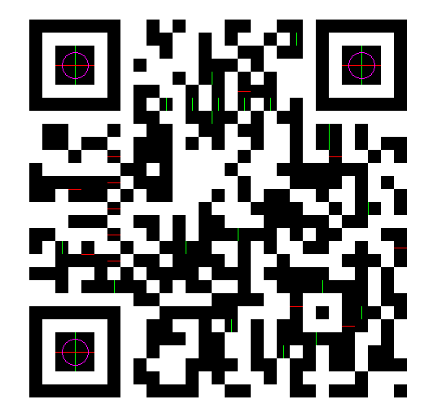
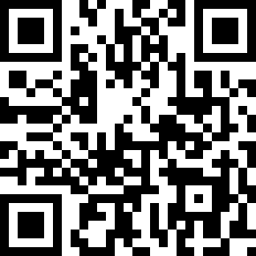
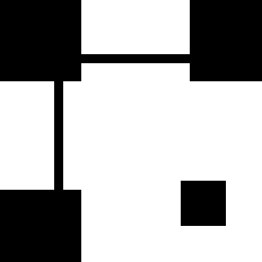

How do random squares of black and white come together store information?
I point my phone at a QR code a dozen times a day and never think about it. At some point that stopped being acceptable, so I sat down and wrote a decoder in C, from a JPEG on disk all the way to the text inside. No libraries beyond stb_image to get pixels into memory.
The pipeline turned out to be six fairly independent stages:
image -> threshold -> find finders -> order corners
-> sample grid -> read codewords -> parse bitstream -> text
Roughly the first half is computer vision, turning a photo into a grid of squares. The second half is pure bit manipulation, turning that grid into bytes. When a decode fails you usually want to know which half betrayed you.
One thing I am deliberately skipping in this article: error correction. A QR code carries Reed-Solomon parity so it can survive being scratched, folded, or partially covered by a coffee cup.
The example I will use throughout is this one, which encodes
http://en.m.wikipedia.org:
Thresholding
Everything downstream only wants to know one thing about a pixel: is it dark or light? So the first thing I do is throw away colour and collapse the image to two values.
// brightness = max(r,g,b), 0..255
static inline int brightness(Color c) {
int r = (c >> 16) & 0xFF, g = (c >> 8) & 0xFF, b = c & 0xFF;
int m = r > g ? r : g;
return m > b ? m : b;
}
for (int y = 0; y < img.height; y++)
for (int x = 0; x < img.width; x++)
set_pixel(img, x, y,
brightness(get_pixel(img, x, y)) > THRESHOLD
? LIGHT_PIXEL : DARK_PIXEL);
THRESHOLD is just a constant, 170 in my code. This is the
laziest decision in the whole project. It works great for a QR code on
a screen or printed on white paper, and falls apart the moment there is
a shadow across half the image, because no single cutoff is right for
both halves.
The proper fix is adaptive thresholding, comparing each pixel against a local average instead of a constant. I kept the global version because it got me to the interesting parts faster, and because when a photo fails to decode the first thing I do is dump this image and look at it.
Every image in this article is one of those debug dumps. I write a PPM file at every stage, since PPM is a few lines of code and every viewer opens it. Being able to see what the algorithm sees turned a class of impossible bugs into five minute bugs.
Detecting finder squares
Three corners of every QR code carry a finder pattern, the concentric square that makes a QR code instantly recognisable. They exist so a decoder can locate and orient the code without knowing anything else about it.
The clever part is why that shape was chosen. Draw a line through the centre of a finder pattern, any line at any angle, and the run of dark and light you cross always has the same proportions:
dark : light : dark : light : dark 1 : 1 : 3 : 1 : 1
This ratio does not care how big the code is or which way up it is. That makes it a very strong thing to search for, so that is what I search for. The check divides the total run length by 7 to recover the module size, then compares each run against its expected multiple:
static bool matches_ratio(const int run_lengths[5]) {
int total = run_lengths[0] + run_lengths[1] + run_lengths[2]
+ run_lengths[3] + run_lengths[4];
if (total < 7) return false;
int module = total / 7;
int tolerance = module / 2 + 1;
return abs(run_lengths[0] - module) <= tolerance
&& abs(run_lengths[1] - module) <= tolerance
&& abs(run_lengths[2] - 3 * module) <= 3 * tolerance
&& abs(run_lengths[3] - module) <= tolerance
&& abs(run_lengths[4] - module) <= tolerance;
}
The tolerance matters. Pixels are integers, module edges rarely land on them cleanly, and a photo adds blur on top. Half a module of slack per run survives that without matching random noise.
To feed it, I scan each row keeping a sliding window of the last five runs. A single row of hits is noisy though, plenty of spots in the data area produce a 1:1:3:1:1 run by accident. So I scan every column the same way and keep only the points where a horizontal hit and a vertical hit land on the same pixel.
A real finder centre matches the ratio in both directions. A coincidence almost never does. In the image below green marks horizontal hits and red marks vertical ones, and the data area throws off plenty of both, but only at the three finder centres do they agree.
That still leaves more than three candidates. The last step is to pick the best three, and here geometry does the work. The three finders sit at three corners of a square, so their centres form a right-angled triangle with two equal legs. I score every triple against that ideal and keep the best:
static float triple_score(Point a, Point b, Point c) {
float d[3] = { dist2(a,b), dist2(b,c), dist2(a,c) };
// ... sort d ascending ...
float legs = fabsf(d[0] - d[1]) / d[2]; // legs must be equal
float pythag = fabsf(d[2] - (d[0] + d[1])) / d[2]; // and meet at a right angle
return legs + pythag;
}
Both terms are ratios, so the score does not care about size. Working
in squared distances also means Pythagoras is just
d[2] == d[0] + d[1], no square roots needed. For this
example there were exactly three candidates, scoring 0.0000, a perfect
triangle. That is what you get from a code on a screen.

Finding the corners
I have three points but no idea which is which. Rotate the code 180 degrees and the same points come back rearranged, so I work out the orientation from the geometry.
The top-left finder is the easy one. It sits at the right angle, which is the vertex opposite the longest side.
// The right-angle vertex (top-left finder) is the one opposite the hypotenuse.
Point corner, p, q;
if (ab >= bc && ab >= ac) {
corner = c; p = a; q = b;
} else if (bc >= ab && bc >= ac) {
corner = a; p = b; q = c;
} else {
corner = b; p = a; q = c;
}
Telling the other two apart is trickier. They are the same distance from the corner, so no distance test separates them. What separates them is handedness, and the tool for that is the cross product:
long cross = (long)(p.x - corner.x) * (q.y - corner.y)
- (long)(p.y - corner.y) * (q.x - corner.x);
result.tl = corner;
if (cross > 0) { result.tr = p; result.bl = q; }
else { result.tr = q; result.bl = p; }
Its sign tells you whether you sweep clockwise or anticlockwise from one arm to the other. Watch the convention though, in image coordinates y grows downward, so the sense is flipped from the maths you are used to. I got this backwards on the first attempt and every code decoded as mirrored garbage.
The fourth corner has no finder pattern, that absence is how a QR code shows its orientation to a human. As long as the code is not badly skewed, completing the parallelogram is good enough:
result.br = point_sub(point_add(result.tr, result.bl), result.tl);
This is the weakest part of my decoder. A parallelogram handles rotation, scale and shear, but not perspective. Photograph a code at an angle and the far edge is genuinely shorter than the near one. The real fix is to find the bottom-right alignment pattern and fit a proper homography. My codes come off screens, so I got away with the cheap version.
Grid sampling
Now I turn pixels into modules, the individual squares of the code.
First, how many are there? QR codes come in 40 versions and the size is
fixed: version 1 is 21x21 and each version adds 4 modules per side, so
N = 17 + 4·version. I do not need an exact measurement,
only one good enough to snap to the nearest legal size:
static int module_count(Corners corners, int module_size) {
int N = (int)lroundf(dist(corners.tl, corners.tr) / module_size) + 7;
N = ((N - 17 + 2) / 4) * 4 + 17; // round to the nearest 17 + 4k
if (N < 21) N = 21;
if (N > 177) N = 177;
return N;
}
The + 7 is worth a pause. The corners I found are finder
centres, not the edges. Each finder is 7 modules wide with its centre
3.5 modules in, so the centre-to-centre span is 7 modules short of the
full width.
To sample a module I map its coordinates to a pixel by interpolating across the four corners, first along the top and bottom edges, then between them:
static Point map_module(Corners corners, float u, float v, int N) {
float s = (u - 3.5f) / (N - 7); // 0 at tl/bl, 1 at tr/br
float t = (v - 3.5f) / (N - 7); // 0 at tl/tr, 1 at bl/br
float top_x = lerp(corners.tl.x, corners.tr.x, s);
float top_y = lerp(corners.tl.y, corners.tr.y, s);
float bot_x = lerp(corners.bl.x, corners.br.x, s);
float bot_y = lerp(corners.bl.y, corners.br.y, s);
return (Point){ lroundf(lerp(top_x, bot_x, t)),
lroundf(lerp(top_y, bot_y, t)) };
}
This handles rotation and scale for free. I aim at the centre of each
module with a + 0.5f offset, and instead of trusting one
pixel I take a 3x3 window and majority vote:
Point pt = map_module(corners, c + 0.5f, r + 0.5f, N);
int dark = 0, tot = 0;
for (int dy = -1; dy <= 1; dy++)
for (int dx = -1; dx <= 1; dx++, tot++)
if (get_pixel(img, pt.x + dx, pt.y + dy) == DARK_PIXEL) dark++;
grid[r * N + c] = (dark * 2 > tot);
The result is a clean N x N bitmap, drawn here at ten pixels per module. If this image looks right, the computer vision half is done and the rest is bit manipulation. For the example it came out as version 3, a 29x29 grid.

Reading codewords
Before reading data I need two things, both stored in the code: which mask was applied and which error correction level was used. They live in 15 modules around the top-left finder:
static int read_format(const uint8_t* grid, int N) {
int format = 0;
for (int i = 0; i < 15; i++)
format |= grid[FORMAT_POS[i][0]*N + FORMAT_POS[i][1]] << i;
return format ^ 0x5412;
}
The XOR is a fixed mask the spec applies to the format bits, so an
all-zero format does not create a blank patch that looks like a finder.
For the example this gives 0x647A: mask 1, EC level Q.
Now masking. If the data happened to be mostly zeroes you would get a big blank area in the middle, which a camera struggles to lock onto. So the encoder XORs the data with one of eight fixed patterns and records which one:
static bool mask_bit(int mask, int r, int c) {
switch (mask) {
case 0: return (r + c) % 2 == 0;
case 1: return r % 2 == 0;
case 2: return c % 3 == 0;
case 3: return (r + c) % 3 == 0;
case 4: return (r/2 + c/3) % 2 == 0;
case 5: return (r*c)%2 + (r*c)%3 == 0;
case 6: return ((r*c)%2 + (r*c)%3) % 2 == 0;
case 7: return ((r+c)%2 + (r*c)%3) % 2 == 0;
}
return false;
}
XOR is its own inverse, so undoing the mask is the same operation. Only data modules get masked, the finders and timing patterns are left alone.
Which raises the next question, which modules are data? A surprising amount of a QR code is structure. I build a map marking everything that is not data: finders, separators, timing patterns, alignment patterns, and format areas.
mark(f, N, 0, 0, 9, 9); // top-left finder + separator + format mark(f, N, 0, N-8, 9, 8); // top-right mark(f, N, N-8, 0, 8, 9); // bottom-left (also covers the dark module) mark(f, N, 6, 0, 1, N); // horizontal timing mark(f, N, 0, 6, N, 1); // vertical timing
Everything black in the map below is structure. Everything white is payload.

The data itself is laid out in a way that took me a while to believe. It is read in two-module-wide columns from the bottom right, snaking up, then down, then up again:
for (int col = N - 1; col > 0; col -= 2) {
if (col == 6) col--; // skip the vertical timing column
for (int i = 0; i < N; i++) {
int row = (dir < 0) ? (N-1 - i) : i;
for (int j = 0; j < 2; j++) {
int c = col - j;
if (func[row*N + c]) continue; // skip function modules
int bit = grid[row*N + c];
if (mask_bit(mask, row, c)) bit ^= 1; // undo the mask
cur = (cur << 1) | bit;
if (++bits == 8) { out[nbytes++] = cur; cur = 0; bits = 0; }
}
}
dir = -dir;
}
The col == 6 case catches everyone out. The vertical
timing pattern takes up a whole column, so the spec shifts the column
pairing across it. Other than that the loop stays simple: the function
map decides what to skip and the mask comes off inline, so each bit is
handled once. For the example this produced 70 codewords.
Extracting the data
Those 70 bytes are not the message, and not even in the right order. QR codes split the payload into blocks, each with its own Reed-Solomon parity, then interleave the blocks in the grid. That way a coffee stain spreads its damage thinly across every block instead of destroying one, which is exactly what Reed-Solomon can repair.
So the first job is to undo the interleaving. How the blocks are structured comes from a big table indexed by version and EC level:
typedef struct {
uint8_t ec_per_block; // EC codewords per block
uint8_t g1_blocks, g1_data; // group 1: block count, data codewords per block
uint8_t g2_blocks, g2_data; // group 2: block count, data codewords per block
} BlockInfo;
There are two groups because the data does not always divide evenly, so some blocks are one codeword longer. The de-interleave walks column-wise and skips blocks that have run out:
for (int k = 0; k < max_data; k++)
for (int b = 0; b < num_blocks; b++)
if (k < data_len[b])
blocks[b][k] = codewords[idx++];
One trap I fell into: the EC level bits are not in the order you would
expect. L is 1, M is 0, Q is 3, H is 2, so a small lookup table fixes
it. For the example, version 3 at level Q gives two blocks of 17 data
codewords each. Concatenating their data halves gives the real message,
starting 41 96 87 47.
Finally the bitstream. This is not a byte stream, fields are packed at arbitrary bit offsets, so I read it with a bit-level reader:
static int read_bits(BitReader* br, int n) {
int v = 0;
for (int i = 0; i < n; i++) {
int bit = (br->pos < br->nbits)
? (br->data[br->pos >> 3] >> (7 - (br->pos & 7))) & 1
: 0;
v = (v << 1) | bit;
br->pos++;
}
return v;
}
The stream is a series of segments, each with a 4-bit mode, a character count, and then the data. The modes exist to save space. Numeric packs three digits into 10 bits, alphanumeric packs two characters into 11, and byte mode is the honest 8 bits each. The width of the count field depends on the mode and version.
Tracing the example by hand is the satisfying part. The message begins
41 96 87 47, which in binary is:
0100 0001 1001 0110 1000 0111 0100 0111
^^^^ mode = 4 (byte)
^^^^ ^^^^ count = 0x19 = 25 characters
^^^^ ^^^^ 0x68 = 'h'
^^^^ ^^^^ 0x74 = 't'
25 characters, and http://en.m.wikipedia.org is exactly 25
characters long. The rest falls out the same way.
What I skipped
The big omission is Reed-Solomon error correction. My decoder computes syndromes, which is enough to detect that a block is damaged but not to fix it.
This matters more than I expected. Codes on a screen decode perfectly and report every block clean. Codes I photographed with a phone mostly do not, because the global threshold and the parallelogram approximation each introduce a few wrong modules, and without correction a few is fatal.